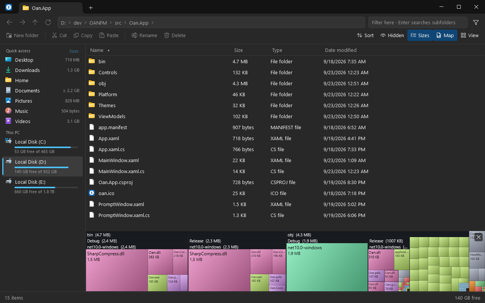

A file manager for Windows that shows where the space went.
OAN puts the size of every folder right in the list, opens archives like folders, and keeps the menus, dialogs and Recycle Bin you already know from File Explorer. Free and open source.

What it does today
-
Folder sizes, where you look for them
The Size column is filled in for folders too, and stays current as their contents change. Turn on the size map to see the same numbers as areas, biggest first.
-
File operations you already trust
Copy, move, rename and delete are carried out by the same Windows component Explorer uses: the Recycle Bin, the usual “replace or skip” dialog, and undo all behave as you expect.
-
The real right-click menu
Not an imitation of it. Whatever your installed programs add to Explorer's menu is there in OAN's as well.
-
Archives open like folders
Look inside zip, 7z, rar and tar, extract them, or compress a selection to zip. With 7-Zip installed, OAN borrows it for passwords, split volumes and the rarer formats.
-
Tabs, views, filters
Tabs with their own history, six views from details to extra-large thumbnails, and a box that filters as you type — press Enter and it searches the subfolders.
-
Looks like it belongs
Light and dark with Windows, the Windows 11 Mica and Acrylic materials, and themes that are plain JSON files you can copy and edit.
Work in progress
OAN is an early alpha. It is usable for everyday browsing and file operations, but it is not finished: things are missing, things will change, and there will be bugs. Keep a backup of anything you cannot afford to lose.
Works today
- Browsing, tabs, the address bar, the sidebar
- Copy, move, rename, delete, drag and drop
- Folder sizes and the size map
- Opening, extracting and creating archives
- Mounting
.isoimages - Filtering, and searching by name
- Themes and window materials
Not there yet
- Searching inside files
- Instant sizes for a whole drive
- Indexed, instant search
- Two panes side by side
- FTP and other remote locations
- An installer, updates, a signed executable
- Languages other than English
Try it
- Download the newest zip from the releases page.
- Unzip it anywhere you like.
- Run
Oan.exe.
Nothing else to install. OAN is not code-signed yet, so the first time Windows may say “Windows protected your PC” — choose More info, then Run anyway. Found a bug? Open an issue. Want to read or build the code? It is all on GitHub.